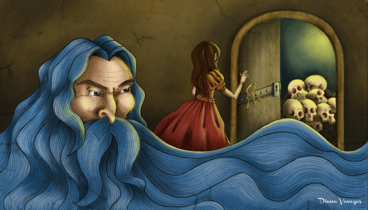

barba Azul
Barba Azul era um rico conde, assustador por ser muito feio, com uma horrível barba azul. Ele já se tinha casado seis vezes, mas ninguém sabia o que tinha acontecido com as esposas, que desapareceram. Quando o Barba Azul visitou um de seus vizinhos e pediu para casar com uma de suas filhas, a família ficou apavorada. O Barba Azul acabou por convencer a filha caçula. Os dois casaram-se e foram viver no castelo do nobre.
Pouco tempo depois, o Barba Azul avisou que iria viajar por uns tempos; ele entregou todas as chaves da casa para sua esposa, incluindo a de um pequeno quarto que ele a havia proibido de entrar. Logo que ele se ausentou, a mulher começou a sofrer de grande curiosidade sobre o quarto proibido. Após alguns dias pensando no que havia lá, a mulher resolveu bisbilhotar o que havia no quarto, ela descobriu o macabro segredo do marido: o chão do quarto estava todo manchado de sangue, e os corpos das ex-esposas do Barba Azul estavam pendurados na parede. Apavorada, ela trancou o quarto, mas não viu que o sangue havia sujado a chave.
A esposa caminha em direção ao quarto proibido. Ilustração por Walter Crane
Quando o Barba Azul retornou, ele percebeu imediatamente o que sua esposa tinha feito. Cego de raiva, ele ameaçou-a, mas ela conseguiu escapar e trancar-se junto da irmã, na torre mais alta da casa. Quando o Barba Azul, armado com uma espada, tentava derrubar a porta, chegaram dois irmãos das mulheres. Os irmãos mataram o nobre enlouquecido e salvaram suas parentes.
A mulher do Barba Azul ficou com a fortuna do marido morto: com parte do dinheiro, ela ajudou sua irmã a casar com seu amado; outra parte ela deu aos seus irmãos. Ela guardou o dinheiro restante, até se casar com um cavalheiro que lhe fez esquecer do suplício que passara.

Barba azul é morto. Por Walter Crane
Embora conhecido como um conto popular, o personagem Barba Azul parece derivar de lendas relacionadas com indivíduos históricos da Britânia. A origem mais conhecida e frequentemente citada é do nobre bretão do século XV e notório assassino, Gilles de Rais. Entretanto, Gilles de Rais não matou sua esposa, nem foram encontrados quaisquer corpos em sua propriedade, porém os crimes pelos quais foi condenado envolviam abuso e assassinato brutal de crianças.[1]
Outra possível fonte provém da obra de São Gildas, "Conomor, O Amaldiçoado", onde descreve um nobre casado com uma mulher aristocrata, Triphine. Ela foi avisada pelos fantasmas das ex-esposas do nobre, assassinadas quando estavam grávidas. Quando também engravidou, foi morta pelo marido mas São Gildas milagrosamente a ressuscitou. E quando ela foi trazida de volta para Conomor, as paredes do castelo ruíram. Conomor é uma figura histórica, camponeses locais acreditavam que ele era um lobisomem. Em vários outros lugares há igrejas dedicadas a Santa Triphine e o filho dela, São Tremeur.[2]
Uma terceira possível origem do personagem Barba Azul pode ser traçada a partir de Henrique VIII da Inglaterra, famoso por matar duas de suas seis esposas.[3]